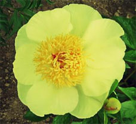
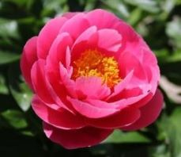
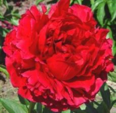
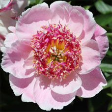
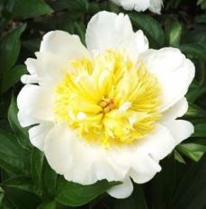
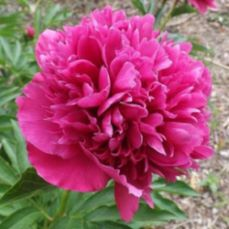
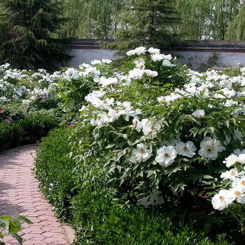
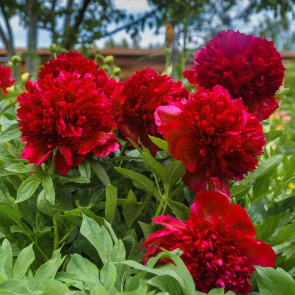
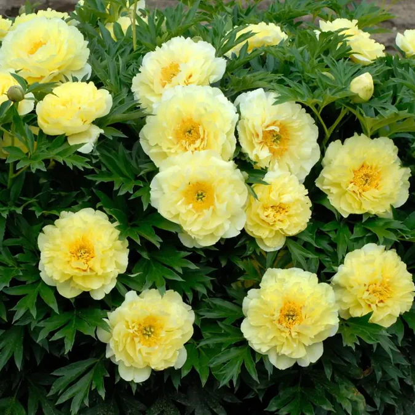

Cultivarea bujorilor a evoluat semnificativ de-a lungul secolelor, cu mii de soiuri dezvoltate pentru culoare, forma si marime. Aceasta diversitate le face sa fie plante extrem de apreciate si variate, oferind ceva pentru aproape orice preferinta si tip de gradina.
După tipul de floare
Singulară

De obicei seamănă cu forma sălbatică cu 5 sau mai multe petale, stamine purtătoare de polen și carpele funcționale. Petalele în cultură pot avea până la 15 petale, dar totuși pot fi clasificate drept Singulare, cu o singură condiție: petalele să fie răspândite într-o formă de farfurie – în loc să fie în formă de cupă, ciufulite sau să dea impresia unei a treia dimensiuni vizibile, care au fost folosite pentru a justifica în schimb aplicarea clasificării Semi-Duble.
Semi-duble

În aceast tip sunt incluse destul de multe varietăţi. Ele au în comun stamine proeminente și o corolă bogată, prin combinații de trăsături: transformarea parțială a staminelor în petale interioare, multiplicarea petalelor sau structura petalelor care adaugă volum vizual florii.
Full-double

În expresia supremă a acestei forme, toate staminele și carpelele sunt transformate în petale. Cu toate acestea, staminele sunt permise dacă aceastea sunt cu condiția ca acestea să fie obscure, fără separarea manuală a petalelor. Soiurile de bujor din această clasă sunt aproape întotdeauna cu anatomie în două etape (floare-în-floare), anatomia în două etape reprezintând cantitatea mai mare de petale văzută în "Full-Doubles". Când staminele purtătoare de polen apar în aceste flori, acestea se vor găsi într-un inel subțire la marginea florii inferioare și într-un mic smoc încorporat în centru.
Japoneză

Diagnosticarea formei florilor japoneze sunt staminele. Acestea sunt abortive sau transformate cu o origine încă vizibilă. Marginile staminelor sunt îngroșate și conțin adesea polen viabil, dar este învelit în țesut și nu este disponibil în alt mod. Bujorii originali de această formă au fost importați din Japonia, unde lipsa împrăştierii polenului era o caracteristică dorită.
Anemonă

Transformarea staminei în formă de anemonă a progresat spre caracteristicile petalelor până în punctul în care toate dovezile vizibile ale originii staminei, cu excepția culorii galbene, au dispărut. Aceste structuri sunt denumite petaloide, fiind forma de tranziție între stamine și petalele interioare. La unele tipuri, aceste petaloide sunt foarte înguste și galbene, oferind un contrast comparabil cu cel al florii de formă japoneză. Pe măsură ce dimensiunea crește, segmentele transformate devin mai lungi, mai largi și capătă textura și culoarea petalelor de gardă, ducând la forma florii Bomb.
Bomb

Lățimea și lungimea până la care segmentele interioare pot ajunge s-au mărit în așa fel încât au devenit petale interioare, aproape întotdeauna de aceeași culoare ca și sepalele. Efectul general este o minge așezată pe o farfurie, placa fiind formată din sepale, iar petalele formând mingea.
După tipul de specie

Bujorii erbacei
( Paeonia officinalis )
Acesti bujori sunt adesea intalniti in gradinile din regiunile muntoase ale Europei. Se remarca prin cresterea lor erecta si prin radacinile tuberoase care asigura nu doar supravietuirea plantei de la un an la altul, dar si o inflorire spectaculoasa.

Bujorii tip copac / bujori arbustivi
( Paeonia Suffruticosa )
Cunoscuti si sub denumirea de bujori arbustivi , acesti bujori aduc un plus de eleganta si distinctie oricarei gradini. Originari din Asia de Est, bujorii arbustici sunt apreciati pentru florile lor mari, de obicei mai impresionante decat cele ale bujorilor erbacei.

Bujori hibrizi
( bujorii Itoh )
Acesti bujori combina caracteristicile bujorilor erbacei cu cele ale bujorilor arbustivi, oferind o paleta variata de culori si forme florale, precum si o rezistenta mai mare si o perioada de inflorire extinsa.